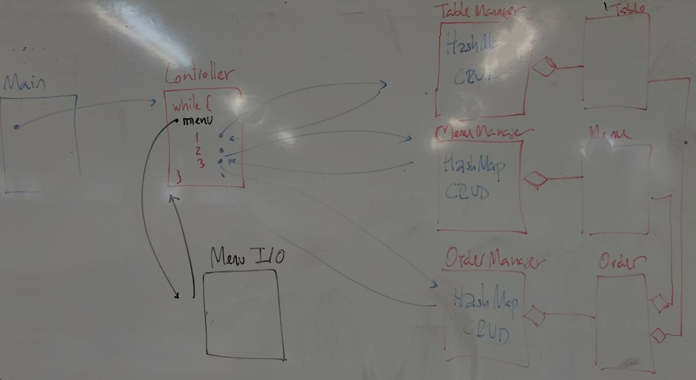

IFCD0210 Product Backlog
ifcd0210
backlog

Class Screen Recordings
Class Screen Recordings by day on AWS S3, video/audio screen class .mp4

Product Backlog by Month
December 2023
| Sprint | Day | Date | Topics | Details Topics |
|---|---|---|---|---|
| #1 | 1 | 19/12/2023 | - Course Presentation - Methodologies introduction: learning, sprints & paths - Course Syllabus: Java Helsinki MOOC, Full Stack, Front-end, Server, Project, SCRUM, Git & DevOps, Linux and OS - Set up tools: Linux, Network, Account, IDEs, Git, Documentation |
- Mooc Java - Deep Dive Into Modern Web Development / Full Stack Web Development, Open Uni: Full Stack Web Development 5 cr / Full Stack - Answering the useful (right?) questions |
| 2 | 21/12/2023 | - Set up tools: Linux, Network, Account, IDEs, Git, Documentation - - Maven & Java SE project ++ Manage Time&Mind: (1) Keep Calm & Walk Away: Negative Logic, Pavoland, One tool JUST TO one problem, Optimal Solution, Give Up, Stress, Burnt out (2) Plan your energy: match energy with tasks ++ Bash example scripting |
- Idea - Pavoland - Bash executable - What is Bash? - TMCBeans MOOC Helsinki Java 2023 |
|
| 3 | 22/12/2023 | - Set up tools: Linux, Network, Account, IDEs, Git, Documentation - IDE: Visual Code - Create React App ++ Documentation: quarto & .md |
- Visual Code - Quarto Create -Lab#SE00-1 - UML |
January 2024
| Sprint | Day | Date | Topics | Details Topics |
|---|---|---|---|---|
| #2 | 4 | 08/01/2024 | - Linux (1) Mindset/Grow (2) Execution/Code-Algorithm (3) Architecture/Programming (4) Learning/A-Ha-Moment (5) Personal/Path - 4 cognitive tempos: Plan - Execute - Revision - Reflection How does brain learn? Picnic > Mechanism > Consolidate - Intro API Rest |
- Simple, complicate, complex problem - Api Rest |
| 5 | 09/01/2024 | - - Quarto - Intro Architecture: request response cycle, SPA & Server-side rendering, JPA Time Management Tasks: (1) Mooc (2) Notes / Documentation / Reading / Prepare classes & lessons / Vocabulary (3) Architecture / UML / Domains (4) Personal Project (5) Linux Devops (6) Timetable - Linux install soft: apt / snap / software manager Homework: client-server architecture, request/response cycle, MVC, SPA versus server-side rendering |
- Request Response Cycle - Spring MVC - Spring Boot flow |
|
| 6 | 11/01/2024 | - - Linux: install apps, clone, snapshop, software manager, mirrors, repositories, update, upgrade, sudo, apt, snap - Concepts: domain & immutability - Quarto domain: local, remote, gh-pages, collaborative, auth (gh auth login, user commit&push, code sign in sync) |
||
| 7 | 12/01/2024 | - ++ React Intro - System tools linux: (1) System reports, manager, settings, info (2) Update, archive, software, driver, power, synaptic manager (3) disk analyzer, disks (4) GParted (5) Htop sudo apt-get install htop |
- UML - UML exemples - IBM: An introduction to the Unified Modeling Language - GParted |
|
| #3 | 8 | 15/01/2024 | - - Idea: create Maven Java Project - Classes: Person, Waiter, Menu, Order ++ Mind Management: What is preventing you from planning the week? ++ How to make a week plan ++ Concepts: Architecture, MVC, Patterns, UML, Business Logic |
- UML - UML exemples - IBM: An introduction to the Unified Modeling Language - - Create Project Spring Boot - MVC - Client Server - Car architecture: chassis, engine and steering wheel |
| 9 | 16/01/2024 | - UML: restaurant - Classes: Person, Waiter, Menu, Order - Create Methods and define features - Tasks Categories: (1) Project (2) DDD (3) UML/PseudoCode (4) Code Homework: Mermaid |
- Create Project: Maven Java SE - What is Maven / Central Maven - Create Project: Spring Boot - Creaate Project: ReactJS - Create Project: Quarto - Class Diagram  |
|
| 10 | 18/01/2024 | - Git - Quarto: create a project and push to github - What is the publishing system & quarto engine: .qmd > pandoc > .html > git > github > gh-pages > www - ++ Project phases: tentative, candidates, release, optimums ++ Vocabulary EcoSystem: (1) Software Core tools: framework/engine/publishing system, Code language, SDK (software development kit) (2) Development tools: Configuration system and format (.xml, .json, .yml ), Dependencies & packages management (3) Developer tools: IDE, debugger, collaborative & version control, documentation (Mermaid) (4) DevOps: test, deploy - Before Team Work: listen, ask and words (vocabulary) |
- Quarto Markdown basics - Markdown guide - Markdown sandbox - Markdown tutorial - What is an SDK? - Quarto tentative project |
|
| 11 | 19/01/2024 | - - React Principles: SPA, COP, Virtual DOM, JSX, Hooks, Route - Install nvm: Node Version Manager & create a React Project - Quarto: create a project, push to github, publish - Quarto Ecosystem/Architecture/Pipeline Homework: Git and Quarto |
- React JS: Introduction - React JS: Create a React project - Quarto publish - Git |
|
| #4 | 12 | 22/01/2024 | - (1) Project: mockUp, user-case, versions, iterations (2) Domains (3) UML, flow-diagram & pseudo-code (4) code in intelliJ Idea - healthyFood push to GitHub (1) set up tools (2) 3-auth (3) repos local & remote (4) first commit & push ++ Git: basics |
- Git Alatassian: Setting up a repository - Git Alatassian: Git commit - Git Alatassian: Git Revert - Git Alatassian: Git Checkout |
| 13 | 23/01/2024 | - code, static & non-static, methods - healthyFood CLI App (1) Project: mockUp, user-case, versions, iterations (2) Domains (3) UML, flow-diagram & pseudo-code (4) code in intelliJ Idea - healthyFood push to GitHub (1) set up tools (2) 3-auth (3) repos local & remote (4) first commit & push - healthyFood CLI App v0.0 |
- W3 Schools Java Hashmaps - W3 Schools Java Hashmaps sandbox - GitHub code v0.0 - Lab#SE04-1 |
|
| 14 | 25/01/2024 | - React introduction: the render cycle - React Principles: SPA, COP, Virtual DOM, JSX, Hooks, Route - Install nvm: Node Version Manager & create a React Project - healthyFood React App: JSX components |
- React JS: Introduction - React JS: Create a React project - React Components - Learn React: Describing the UI - Lab#RE06-1 Screen video: Thursday |
|
| 15 | 26/01/2024 | - healthyFood React App: data and props Homework: (1) What is the difference btw Literal JS Object, JSON, Java Object (2) Check the Describing UI from React |
- Lab#RE06-1 - GitHub code v0.1 - JSON crack - No, really, what is JSON? - Working with Literal Objects JS - What is JSON? Screen video: Friday |
|
| #5 | 16 | 29/01/2024 | - JUnit Testing & debugger - Dependencies: Junit, Lombok, JavaFaker - UML healthyFood, growing UML class-diagram flux: (1) adding UI as CLI (2) controller (3) fake DB class and Manager |
- Class and objects - Testing - Example Controller and Manager: Lab#SE02-04 - Lab#SE04-1  Screen video: Monday |
| 17 | 30/01/2024 | - Main Loop and static methods - MVC: what is really a Controller - MVC: what is really a Manager ++ Git: pull request, git visual Idea |
- Non-static class: Person - Lab#SE04-1 - Class and objects Screen video: Tuesday |
|
| 18 | 01/02/2024 | - React: composing the UI: (1) UI as a tree, DOM, Render cycle (2) rendering data, list, images (3) the rules of JSX (4) using Js within HTML: simple/double curly braces (5) props (6) conditional rendering |
- Render Cycle - Rendering lists, Mapping lists - The Rules of JSX - Using curly braces: A window into the JavaScript world - Passing Props to a Component - Conditional Rendering Screen video: Thursday-1 Screen video: Thursday-2 |
|
| 19 | 02/02/2024 | - Pure components React - React SPA vs Server side rendering ++ Intro hooks |
- Keeping Components Pure - Props and states - Lab#RE06-1 Screen video: Friday |
{kind=link}
{kind=link}
{kind=link}
{kind=link}
{kind=link}
{kind=link}
February 2024
| Sprint | Day | Date | Topics | Details Topics |
|---|---|---|---|---|
| #6 | 20 | 05/02/2024 | - Class & Ojbect: from creating an object to casting it - UML: sequence diagram useCse create Menu - Main Loop while & static methods in Controller, HashMap in Mananger Keywords: class, object, have/be, static, domains, scope, reference variable & new object, casting |
- Class and objects - Example Controller and Manager: Lab#SE02-04 - Example UML: Lab#SE03-03 - Lab#SE04-1 Screen video: Monday-1 Screen video: Monday-2 |
| 21 | 06/02/2024 | - Adding interactivity - CRUD operations for HashMap: create and read - We define 2 kind of classes for our Lab: (1) entity or (2) functional - Why UML/doc? (1) better understanding of the task for each iteration (2) crete a unique page for the team: vocabulary, source-of-truth, code (3) plan the task |
- Lab#SE04-1 - GitHub Code v0.2 Screen video: Tuesday-1 Screen video: Tuesday-2 |
|
| 22 | 08/02/2024 | - Describing the UI: (1) components, (2) curly braces, (3) map & filter an array - Render cycle ++ Git: visual code branches management |
- - JavaScript in JSX with Curly Braces - CodeSanbox map chemist/noChemist Screen video: Thursday-1 Screen video: Thursday-2 |
|
| 23 | 09/02/2024 | - - Describing UI: (1) JSX syntaxis and (2) simple and double curly braces (3) how JSX works with data (model) and where |
- - Rendering takes a snapshot in time - JavaScript in JSX with Curly Braces - Passing Props to a Component - Rendering Lists - Props and states - Lab#RE06-1 Screen video: Friday |
|
| #7 | 24 | 12/02/2024 | - Adding more CRUD operations to menuManager - createOrder - Adding CRUD operations to model: table - Creating DDD: new project structure refactoring with IDE help ++ entity vs. functional ( static methods) class |
- Class and objects - Example Controller and Manager: Lab#SE02-04 - Example UML: Lab#SE03-03 - Lab#SE04-1 - healthyFood-createMenu-fluxExecution-v0.2 - menuManager-object Screen video: Monday-1 Screen video: Monday-2 |
| 25 | 13/02/2024 | - DDD: Domain-driven design - Java SE Maven healthyFood restaurant first not-tentative solution with domains approach - order |
- Static modifier - Coupling and DDD - Lab#SE04-1 Screen video: Tuesday-1 Screen video: Tuesday-2 |
|
| 26 | 15/02/2024 | - onclick - Render cycle - React router ++ Project - Domains - UML/pseudo-code - Code |
- - ReactJs Project Structure - React Router - React router - Mantis MUI Code - Mantis MUI template - Mantis MUI docs - Lab#RE06-1 Screen video: Thursday-1 Screen video: Thursday-2 |
|
| 27 | 16/02/2024 | - - DDD: router and project structure - React router ++ Adding style: w3.css: ‘Gourment au catering’: (1) Inline CSS (2) App.css in project root (3) defining layout & paths |
- - Rendering takes a snapshot in time - w3.css templates - Gourment and catering template - Gourment and catering sandbox - Lab#RE06-1 Screen video: Friday-1 Screen video: Friday-2 |
|
| #8 | 28 | 19/02/2024 | - menu and table - Create order mockup and UML++ Git clone Java SE project: manage remotes ++ How to plan, solving issues: (1) Learn to give up (2) Knowledge ilusion (3) Decision-Making (4) Anxiety (5) Resting & creating energy (6) Detect core |
- Static modifier - Coupling and DDD - Cloning a repository - Managing remote repositories - Pushing commits to a remote repository - Lab#SE04-1 Screen video: Monday-1 Screen video: Monday-2 |
| 29 | 20/02/2024 | - Create (pseudocode)createOrder ++ After pseudocode we need to make-decision: (0) quit (1) code pseudocode (2) document approach to feature (3) keep on with pseudocode (4) plan tasks (5) comment with senior (6) comment with AI |
- Lab#SE04-1 - createOrder static methodScreen video: Tuesday-1 Screen video: Tuesday-2 |
|
| 30 | 22/02/2024 | - Deploying ReactJS: AWS Amplify - ReactJS: calling a function vs. passing a function - React JS: buttons, useState & onclick - Render cycle |
- Software Lifecycle: SDLC - Adding event handlers - Adding Interactivity - Lab#RE06-1: deploy Screen video: Thursday-1 Screen video: Thursday-2 |
|
| 31 | 23/02/2024 | - Git: pull request ordersMapping & createOrder to master - React JS: State as a Snapshot - DDD: router and project structure |
- State as a Snapshot - Rendering takes a snapshot in time - Lab#RE06-1: pull rquest - AWS: Build a Full-Stack React Application Screen video: Friday-1 Screen video: Friday-2 |
|
| #9 | 32 | 26/02/2024 | - React: useState- - React: debugger ++ Code analysis (0) render cycle (1) setting state triggers render (2) state over time (3) form, timeout, alert, textarea, event, onChange Homework: code analysis (1) walking (2) red point (3) marketplace |
- setting state triggers render - state over time - - Updating Objects in State Screen video: Monday-1 |
| 33 | 27/02/2024 | - useEffect - React: working with arrays - MF01: proves pràctica i objectiva - Code Analysis: check HW ++ How to present/explain: (1) core introduction (2) what are there: enumerate parts (3) step by step, where init, where finish HomeWork: Code a React component simulating the pedestrians crossing states: people waiting, crossing and getting the finish side. The trigger is a button simulating the traffic lights: red/green. Use the walking, marketplace and red-point examples. |
- - Updating Arrays in State - codesandbox walking - codesandbox marketplace - codesandbox red-point Screen video: Tuesday-1 |
|
| 34 | 29/02/2024 | - React: debugger - React: axios - Middleware ++ Check HW: traffic lights render cycle |
- HW traffic lights Gist GH - Spread syntax - Copying objects with the spread syntax - Updating Arrays in State - - Rest - traffic lights: code - render cycle Screen video: Thursday-1 |
|
| 35 | 01/03/2024 | - - Git Graphto navigate branches- spread operator - Consolidate several hooks into one - useState managing a literal object |
- Rest - Lab#RE07-1 - Copying objects with the spread syntax - Git graph - Code github Lab#RE07-1 v0.0 Screen video: Friday-1 |
{kind=link}
{kind=link}
{kind=link}
{kind=link}
{kind=link}
{kind=link}
{kind=link}
March 2024
| Sprint | Day | Date | Topics | Details Topics |
|---|---|---|---|---|
| #10 | 36 | 05/03/2024 | - React: useState & working with literal object- React: debugger - Code analysis (0) render cycle (1) working with forms & immer(3) Updating objects inside arrays ++ Lab#RE07-1 project: mockapi, axios, request-response cycle Homework: - React: working with arrays |
- - Updating Arrays in State - Lab#RE01-1: axios example - Lab#RE07-1 Screen video: Tuesday-1 |
| 37 | 06/03/2024 | - React: useEffect - React: working with arrays - react-router-dom: home/user simulation & mySimulations - user fake login/logout - fake-server: mockapi ++ Axios: introduction |
- Updating Objects in State - Updating Arrays in State - Lab#RE01-1: axios example - Lab#RE03-3: axios & mockapi example - Lab#RE07-1  Screen video: Wenesday-1 Screen video: Wenesday-2 |
|
| 38 | 07/03/2024 | - API Rest - - Adding graphics to trafficlighs: (1) timeout setInterval and clearInterval (2) state management pending, walking, completed, light (3) random values to groupToWalk (4) finish simulation and refresh |
- API Rest - Lab#RE07-1 - trafficlights SPA 1.0.1 - GitHub code v0.1 Screen video: Thursday-1 |
|
| 39 | 08/03/2024 | - useContext - API Rest - React: axios |
- useContext - trafficlights SPA 1.2.1 - trafficlights SPA 1.3.0 - Lab#RE07-1  Screen video: Firday-1 |
|
| #11 | 40 | 11/03/2024 | - Spring Boot: request-response cycle - Create project: sprint init - @RestController and @Controller - JPA: @Repository and application.properties - - create @Service fake array of simulation data model |
- Create a project - Controller - RestController - vaadin - demoBoot0 Screen video: Monday-1 Screen video: Monday-2 |
| 41 | 12/03/2024 | - Sprint Boot simulation - @RestController and @Controller - - Thymeleaf: a modern server-side Java template engine |
- - api rest boot code example - Thymeleaf SSR Java template engine - View - Thymeleaf - Lab#SB00-4: project reference - simulations Spring Boot: project v0.1- simulations Spring Boot: code v0.1 Screen video: Tuesday-1 Screen video: Tuesday-2 |
|
| 42 | 14/03/2024 | - Spring Boot JPA & database H2 - What is a H2 db? - application.properties H2 configuration - JPA: @Repository & @Entity |
- Create Boot TH & H2 - Spring Boot Data - Spring Boot JPA - DDL - simulations Spring Boot: project v0.2- simulations Spring Boot: code v0.2 Screen video: Thursday-1 Screen video: Thursday-2 |
|
| 43 | 15/03/2024 | - Spring Boot JPA & database H2 - Containers: ResponseEntiyy, Optional & Model - Postman |
- Create Boot TH & H2 - Spring Boot Data - Spring Boot JPA - Postman - simulations Spring Boot: project v0.3- simulations Spring Boot: code v0.3 - code reference: CRUD RestController Screen video: Friday-2 |
|
| #12 | 44 | 18/03/2024 | - useContext to decouple axios from render - react-router-dom- project structure - trafficlights adding axios all CRUD operations: (1) addSimulation: Adds a new simulation to the list (2) deleteSimulation: Deletes a simulation from the list by its ID (3) updateSimulation: Updates a simulation in the list with new data |
- trafficlights SPA 1.3.0 - trafficlights SPA 1.4.0 - Props and children - Lab#RE07-1 Screen video: Monday-1 |
| 45 | 19/03/2024 | - useContext to decouple axios from render - trafficliights adding axios all CRUD operations: (1) addSimulation: Adds a new simulation to the list (2) updateSimulation: Updates a simulation in the list with new data - project structure |
- trafficlights SPA 1.4.1 - trafficlights SPA 1.4.2 - Lab#RE07-1 - How do I hide an API key in Create React App? - HTML Event Attributes Screen video: Tuesday-1 Screen video: Tuesday-2 |
|
| 46 | 21/03/2024 | - trafficlights adding useEffect: clear return and cancelToken - Tasks to integrate code into trafficlights v0.3: (1) components tree and hooks: useContext (2) react-router-dom and routes (3) axios and dataSimulations.js (4) CRUD operation upon simulation (5) vite project / nvm |
- reference: healthyFood router - Enabling Cross Origin Spring - Lab#RE07-1 Screen video: Thursday-1 |
|
| 47 | 22/03/2024 | - login- Integrate CRUD, routes, new tree components, useContext and dependenies to trafficlights v0.3 |
- Albertu’s dilemma - Lab#RE07-1 - code github Screen video: Friday-1 Screen video: Friday-2 |
{kind=link}
{kind=link}
{kind=link}
{kind=link}
{kind=link}
{kind=link}
{kind=link}
{kind=link}
{kind=link}
April 2024
| Sprint | Day | Date | Topics | Details Topics |
|---|---|---|---|---|
| #13 | 48 | 02/04/2024 | - AI landscape: FlowiseAI - On-premises or cloud server: nextCloud - simulation - CRUD: Create and Update - @RestController - Postman requests - Pràctiques IFCD0210 |
- Spring: from EJB to Boot - Expert One-on-One J2EE™ Design and Development - NextCloud - NextCloud Apps - FlowiseAI - NextJS: use client - use server Screen video: Tuesday-1 Screen video: Tuesday-2 |
| 49 | 04/04/2024 | - JPA: @OneToMany - Model: user/simulations - Spring Boot: complete CRUD operations for simulation - CRUD: Create and Update - @RestController - Postman requests - DevOps: 5 backups: MV on SSD, Snapshoot VirtualBox, Linux Timeshift, GitHub. NexCloud - How to create a React Project: (1) From Zero: vite or create-react-app (2) Meta framework: NextJS (3) Templates: Mantis (4) Builders: retool (5) AI - How to get an onbording project? /scr? dependencies? read.me? dpendencies management, yarn, npm, maven, graddle? data? pom.xml or package.json? Where is main or index.html? How to execute? |
- Spring Model - Spring JPA - Spring Data - mui store - mantis - reactbuilder - retool - NextJS Screen video: Thursday-1 Screen video: Thursday-2 |
|
| 50 | 05/04/2024 | - JPA: @OneToMany - Model: user/simulations |
- lab reference - simulations 0.4 project & code Screen video: Friday-1 Screen video: Friday-2 |
|
| #14 | 50 | 08/04/204 | - JPA: @OneToMany & @ManyToOne - Model: player/simulations - H2 DB in-memory - @RestController: CRUD simulation & player - @Service: populate: assign player to simulation - application.properties |
- lab reference - simulations 0.4 project & code -JPA: defining query methods Screen video: Monday-1 Screen video: Monday-2 |
| 51 | 09/04/204 | - JPA: @OneToMany & @ManyToOne- H2 DB in-memory - Model: player/simulations - Model: player/subscriptions - pull-request add subscription domain to project |
- simulations v0.5: code - simulations v0.5: project - merge pull-request subscription - postman api request docs Screen video: Tuesday-1 Screen video: Tuesday-2 |
|
| 52 | 11/04/204 | - git: pull-request with conflicts to merge, visual editor - trafficlights - useReducer |
- Resolving a merge conflict on GitHub - Merging a pull request - pull-request - input to state  - Choosing the State Structure - useReducer - Screen video: Thursday-1 |
|
| 53 | 12/04/204 | - git: pull-rquest simulations card & paymnent trafficlights- useReducer |
- useReducer  - useReducer todos - Screen video: Monday-1 |
|
| #15 | 54 | 15/04/2024 | - useReducer - How declarative UI compares to imperative - Principles for structuring state - CV & Presentation: value - clear - authentic (1) Mandatory: tech vocabulary, what you aply for (Junior Java Backend), great intro, path, guide reader to focal points, use action-verbs: plan, organize, execute, review, etc (2) Avoid: divagation, generlization, emotional-like wording, indirect wording (could, may, etc) (3) Optional: font, color, images |
- input to state - Choosing the State Structure - useReducer - Lab#RE03-1 Screen video: Monday-1 |
| 55 | 16/04/2024 | - useReducer - Sharing State Between Components: Accordion - Preserving and Resetting State |
- Sharing State Between Components - Single source of truth - Preserving and Resetting State - Lab#RE03-1 Screen video: Tuesday-1 |
|
| 56 | 18/04/2024 | - Extracting State Logic into a Reducer - Scaling Up with Reducer and Context - useReducer |
- Extracting State Logic into a Reducer - Scaling Up with Reducer and Context - useReducer - todo-reducer: code - Lab#RE03-1 Screen video: Thursday-1 |
|
| 57 | 19/04/2024 | - Extracting State Logic into a Reducer - Scaling Up with Reducer and Context - useReducer |
- Extracting State Logic into a Reducer - Scaling Up with Reducer and Context - todo-reducer: code - reducer examples - useReducer - Lab#RE03-1 Screen video: Friday-1 |
|
| #16 | 58 | 22/04/2024 | - Boot: JPA @ManyToMany - simulations: University - DB n:m examples:(1) user <1:n> borrow <n:1> book user <n:m> book (2) user <1:n> order <n:1> item (suboptimal implementation for this use-case) (3) user <1:n> order <1:n> orderDetail <n:1> item user <n:m> item |
- Spring Boot Data - Spring Boot JPA ID - Spring Boot Mappings JPA - UML patterns - code LABs JPA reference - simulations 0.8 project Example orderDtail & orderExample orderDtail & order: order 100 Example orderDtail & order: order 101 Screen video: Monday-1 Screen video: Monday-2 |
| 59 | 23/04/2024 | - Boot: JPA @ManyToMany - simulations: University - Git: conflict resolution on local IntellJIdea and pull-request |
- Spring Boot Data - Spring Boot JPA ID - Spring Boot Mappings JPA - code LABs JPA reference - simulations 0.8 project - simulations 0.7 project Screen video: Tuesday-1 |
|
| 60 | 25/04/2024 | - Boot: JPA @ManyToMany- @JoinColumn 1:n @Entity n:1 - simulations: University & TrafficTrial - DB NoSQL: mongoDB |
- mongoDB - Spring Boot and MongoDB - Accessing Data with MongoDB - Lab#SB00-6 - simulations 0.8 project Screen video: Thursday-1 |
|
| 61 | 26/04/2024 | - Boot: JPA @ManyToMany- @JoinTable n:m - simulations: University & TrafficTrial - DB NoSQL: mongoDB - Curriculum Vitae: How to properly write it |
- Java Persistence - Curriculum Vitae Screen video: Friday-1 |
|
| #17 | 62 | 29/04/2024 | - Boot: JPA @ManyToMany- @JoinTable n:m - simulations filling DB: (1) University (2) TrafficTrial (3) Enrollment - DB NoSQL: mongoDB - String connection, pom & app properties - @Document & MongoRepository |
- mongoDB - Spring Boot and MongoDB - Accessing Data with MongoDB - Lab#SB00-6 - simulations 0.8 project - simulations 0.9 project - simulations 1.0 project Screen video: Monday-1 Screen video: Monday-2 |
| 63 | 30/04/2024 | - DB NoSQL: mongoDB - simulations 1.0.0: imagePlayer - simulations 1.0.1: player 1:n imagePlayer |
- mongoDB - Spring Boot and MongoDB - Accessing Data with MongoDB - Lab#SB00-6 - Spring Data - simulations 1.0 project Screen video: Tuesday-1 |
|
| 64 | 02/05/2024 | - - H2 DB local: application.properies - simulations 1.0.1: player 1:n imagePlayer- DB NoSQL: mongoDB |
- Ref code: local H2 creation - H2 DB - H2 github - Lab#SB00-6 - simulations 1.0.1 project Screen video: Thursday-1 Screen video: Thursday-2 |
|
| 65 | 02/05/2024 | - - simulations 1.0.1: player 1:n imagePlayer- simulations 1.0.2 queries - Intro: Lab#RE05 React-AWS |
- JPQL Language Reference - Defining Query Methods - Spring Cloud for Amazon Web Services - Spring Cloud AWS - Querying MongoDB-React Screen video: Friday-1 |
{kind=link}
{kind=link}
{kind=link}
{kind=link}
{kind=link}
{kind=link}
{kind=link}
{kind=link}
{kind=link}
{kind=link}
{kind=link}
{kind=link}
{kind=link}
{kind=link}
May 2024
| Sprint | Day | Date | Topics | Details Topics |
|---|---|---|---|---|
| #18 | 66 | 06/05/2024 | - simulations 1.0.1: player 1:n imagePlayer- React Reducer & AWS: Chat Project - What is a websocket? - Postman Websocket & Websocket King test |
- simulations 1.0.1 project - Lab#RE05-1: chat & websockets - Websocket - Websocket King Screen video: Monday-1 Screen video: Monday-2 |
| 67 | 07/05/2024 | - What is a websocket? - React Reducer & AWS: Chat Project - AWS DynamoDB: NoSQL - Server & client |
- Postman websocket - Lab#RE05-1: chat & websockets - Server and Client Components - myChat - myChat: wiki Screen video: Tuesday-1 Screen video: Tuesday-2 |
|
| 68 | 09/05/2024 | - React Reducer & AWS: Chat Project v0.0 - Semantic UI React - SocketProvider.js with useContext & useEffect - NoSQL: DynamoDB: partitionKey & sortKey |
- semantic UI React - Lab#RE05-1: chat & websockets - NoSQL scheema example - myChat: wiki Employee NoSQL example partition & sort key Screen video: Thursday-1 Screen video: Thursday-2 |
|
| 69 | 10/05/2024 | - React Reducer & AWS: Chat Project v0.1 - Semantic UI React - SocketProvider.js with useContext & useEffect - Tree component chat |
- Lab#RE05-1: chat & websockets - myChat: wiki ChatRoom v0.1 Screen video: Friday-1 |
|
| #19 | 69 | 13/05/2024 | - React Reducer & AWS: Chat Project v0.1, fake-login - SocketProvider.js with useContext, useEffect & useRef - Tree component chat decoupled - Semantic UI React - Snippets Visual Code React |
- myChat: wiki v0.1 - Reactjs code snippets - Keyboard shortcuts for Linux Screen video: Monday-1 Screen video: Monday-2 |
| 70 | 14/05/2024 | - React Reducer & AWS: Chat Project v0.1, conversation - Semantic UI React - ConversationFeed.jsx coupled: useContext, useEffect, useState, useReducer |
- myChat: wiki 0.1 Screen video: Tuesday-1 |
|
| 71 | 16/05/2024 | - React Reducer & AWS: Chat Project v0.1, decoupled conversation - ConversationFeed.jsx decoupled: useContext, useEffect, useState, useReducer |
- myChat: wiki Screen video: Thursday-1 |
|
| #20 | 72 | 22/05/2024 | - React Reducer & AWS: Chat Project v0.1.5 - SocketProvider.js and implementation of decoupled conversation - React Reducer & AWS: Chat Project v0.2: (1) Fetch & display contacts & groups, chatMenu.jsx (2) NoSQL DynamoDB model to fetch user’s contacts - AI: Mistral models, Spring AI, LMStudio, Vaadin |
- myChat: wiki - Mistral Chat - Mistral Tech - Spring AI - LM Studio - Vaadin - CodeGPT: Chat & AI Agents - Spring Boot, Mistral, DB Screen video: Wednesday-1 Screen video: Wednesday-2 |
| 73 | 23/05/2024 | - React Reducer & AWS: Chat Project v0.2 - NoSQL DynamoDB model to fetch user’s contacts - Fetch & display contacts & groups, chatMenu.jsx |
- myChat: wiki Screen video: Thursday-1 Screen video: Thursday-2 |
|
| 74 | 24/05/2024 | - React Reducer & AWS: Chat Project v0.2 - Fetch & display contacts & groups, chatMenu.jsx - Display user’s contacts and groups & select |
- myChat: wiki Screen video: Friday-1 Screen video: Friday-2 |
|
| #21 | 75 | 27/05/2024 | - React Reducer & AWS: Chat Project v0.2.2 - Fetch & display contacts & groups, chatMenu.jsx - Display user’s contacts and groups & select - Saving Conversation to Local Storage |
- myChat: wiki Screen video: Monday-1 Screen video: Monday-2 |
| 76 | 28/05/2024 | - React Reducer & AWS: Chat Project v0.3 - Create chat, add contact in chatMenu.jsx |
- myChat: wiki Screen video: Tuesdya-1 Screen video: Tuesday-2 |
|
| 77 | 30/05/2024 | - - SDK AWS JS v3: uploader.js- CreateChat.jsx: upload Avatar - AWS: Cognito and Identity User Pool - AWS: create guest Identity User and public S3 |
- Screen video: Thursday-1 |
|
| 78 | 31/05/2024 | - Spring Boot AI - AWS: Cognito and Identity User Pool - AWS: create guest Identity User and public S3 |
- Mistral Chat - Mistral Tech - Spring AI - LM Studio - Vaadin - CodeGPT: Chat & AI Agents - Spring Boot, Mistral, DB Screen video: Friday-1 Screen video: Friday-2 |
{kind=link}
{kind=link}
{kind=link}
{kind=link}
{kind=link}
{kind=link}
June 2024
| Sprint | Day | Date | Topics | Details Topics |
|---|---|---|---|---|
| #22 | 79 | 03/06/20274 | - - Login Auth Cognito React: (1) AWS Cognito Identity Pool User (2) React TS/JS AuthService.js (3) React TS/JS Components (4) AWS SDK JS v3 |
- - Login Auth Cognito React - Code GitHub - OAuth 2.0 Screen video: Monday-1 Screen video: Monday-2 |
| 80 | 04/06/20274 | - - Login Auth Cognito React: (1) AWS Cognito Identity Pool User (2) React TS/JS AuthService.js (3) React TS/JS Components (4) AWS SDK JS v3 - Plan the new feature: Forgot password and resend CODE |
- Login Auth Cognito React - Code GitHub Screen video: Tuesday-1 Screen video: Tuesday-2 |
|
| 81 | 06/06/20274 | - Login Auth Cognito React - Define sequential-flow by functions UML: (1) sign-up feature (2) sign-in feature - JPQL: JPA Query Methods - |
- JPA Query Methods - JPA Query examples Screen video: Thursday-1 Screen video: Thursday-2 |
|
| 82 | 07/06/20274 | - Login Auth Cognito React - Define sequential-flow by functions UML: (1) forgotPassword feature - Spring Boot AI Chat-pdf Project: (1) Spring Boot AI (2) Vectorial DB: MongoDB / AstraDB (cassandra) (3) Data source: local pdf (4) LLM text: OpenAI / AWS Bedrock Titan (6) Amazon Titan Text Embeddings models |
- Spring AI - Flowise, LMStudio - AstraDB - OpenAI Postman - Llama chat, Perplexity.ai, Gemini AI - Amazon Titan Text Embeddings Screen video: Friday-1 Screen video: Friday-2 |
|
| #23 | 83 | 10/06/2024 | - ReactJS vs Spring Java ecosystem: (1) ReactJS & NextJS (2) Spring Boot, Quarkus, Thymeleaf & HTMX - Spring Boot AI - Embedding data from data source & LLM - MongoDB Vector DB |
- HTMX - Thymeleaf - quarkus - Spring Boot Assistant AI - Spring AI - Amazon Titan Text Embeddings Screen video: Monday-1 |
| 84 | 11/06/2024 | - Java 8: streams - Reactive Paradigm Spring Webflux - Spring Boot AI - Embedding data from data source & LLM - MongoDB Vector DB |
- Java 8 - Spring WebFlux - Webflux example - Spring Boot Assistant AI - Spring AI - Amazon Titan Text Embeddings - Spring Boot AI ApplicationRunner - LangChain JS Bedrock Screen video: Tuesday-1 Screen video: Tuesday-2 |
|
| 85 | 13/06/2024 | - Spring Boot Security - Spring Boot Thymeleaf & HTMX |
- Spring Security - Securing a Web Application - Spring Boot Demo Security - HTMX vs React - HTMX Link Screen video: Thursday-1 |
|
| 86 | 14/06/2024 | - Spring Boot Deploy: (1) Create and test Spring Boot App (2) Get app–0.0.1-SNAPSHOT.jar from target: app.jar (3) Create AWS EC2 VM T2.micro Linux (4) Log in from local to EC2 VM with SSH .pem file (5) install JAVA and upload app.jar (6) run app.jar |
- securityDeploy wiki - AWS EC2 - AWS EC2 key pairs .pem file  Screen video: Friday-1 |
|
| #24 | 87 | 17/06/2024 | - Spring Boot Security Deploy: (1) code (2) scp: security copy (3) Environment variables (4) Elastic IP - ReactJS & NextJS - Features NextJS - next-flix NextJS Project & mongoDB - NextJS: server side NodeJS & API |
- securityDeploy wiki - next-flix wiki - Start building with Next.js Screen video: Monday-1 |
| 88 | 18/06/2024 | - ReactJS & NextJS - Client side rendering - Rendering movies - Next.js pages: getServerSideProps() - Strategies/tools to data fetching: (1) API Route (2) Next.js static generation (Server Side Rendering) (3) getServerSideProps() (4) Client Side Fetching -Spring Boot Client/Server: restTemplate - Interfaces (typescript / Java SE) |
- next-flix wiki - Data Fetching - getServerSideProps() - Library6c / Library6s - JavaSE Interfaces Screen video: Tuesday-1 Screen video: Tuesday-2 |
|
| 89 | 20/06/2024 | - ReactJS & NextJS - Static rendering: Server side rendering - getStaticProps() - Next.js App Route / Pages router - Server Actions |
- next-flix wiki - getStaticProps() - What is Next.js? - Pages Routes - App Router Screen video: Thursday-1 |
|
| 90 | 21/06/2024 | - ReactJS & NextJS - - Optimizations - NextJS.pages: (1) getStaticProps() (2) SSR: static rendering - Server Actions |
- next-flix wiki - getStaticProps() - Optimizations Screen video: Friday-1 |
|
| #25 | 91 | 26/06/2024 | - Formació Copmplementària - Inserció laboral, sensibilització mediambiental i en la igualtat de gènere - Prevenció Riscos laborals |
- Programa Formatiu - Prevenció Riscos laborals - Recursos Formatius |
| 92 | 27/06/2024 | Formació Copmplementària - Inserció laboral, sensibilització mediambiental i en la igualtat de gènere - Prevenció Riscos laborals |
- Programa Formatiu - Prevenció Riscos laborals - Recursos Formatius |
|
| - NextJS: server actions - App router vs Pages router - CRUD nextJS - Pagination & search - Movies Detail: (1) dynamic router (slug) (2) Linking and Navigating |
- next-flix (pages/router) - next-flix-router (app/router) - App Router - Dynamic Routes - Linking and Navigating Screen video: Wednesday-1 Screen video: Thursday-1 |
{kind=link}
{kind=link}
{kind=link}
{kind=link}
{kind=link}
{kind=link}
{kind=link}
{kind=link}
{kind=link}
July 2024
- Starting
Pràctiques: 28/06/2024 - Finishing
Pràctiques: 26/07/2024